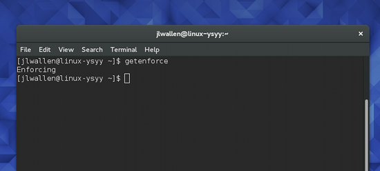
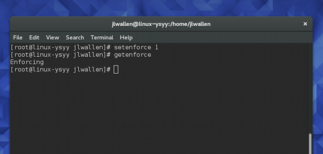
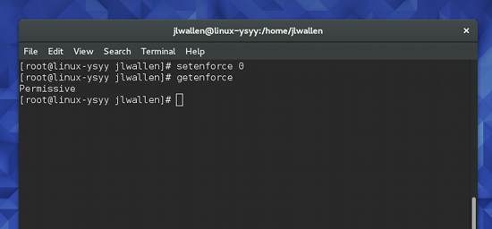
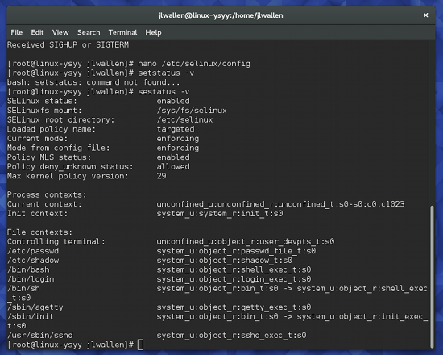

SELinux 入门
编译自：https://www.linux.com/learn/docs/ldp/883671-an-introduction-to-selinux
作者： Jack Wallen
原创：LCTT https://linux.cn/article-7317-1.html
译者： alim0x
本文地址：https://linux.cn/article-7317-1.html

回到 Kernel 2.6 时代，那时候引入了一个新的安全系统，用以提供访问控制安全策略的机制。这个系统就是 Security Enhanced Linux (SELinux)，它是由美国国家安全局（NSA）贡献的，它为 Linux 内核子系统引入了一个健壮的强制控制访问架构。
如果你在之前的 Linux 生涯中都禁用或忽略了 SELinux，这篇文章就是专门为你写的：这是一篇对存在于你的 Linux 桌面或服务器之下的 SELinux 系统的介绍，它能够限制权限，甚至消除程序或守护进程的脆弱性而造成破坏的可能性。
在我开始之前，你应该已经了解的是 SELinux 主要是红帽 Red Hat Linux 以及它的衍生发行版上的一个工具。类似地， Ubuntu 和 SUSE（以及它们的衍生发行版）使用的是 AppArmor。SELinux 和 AppArmor 有显著的不同。你可以在 SUSE，openSUSE，Ubuntu 等等发行版上安装 SELinux，但这是项难以置信的挑战，除非你十分精通 Linux。
说了这么多，让我来向你介绍 SELinux。
DAC vs. MAC
Linux 上传统的访问控制标准是自主访问控制（DAC）。在这种形式下，一个软件或守护进程以 User ID（UID）或 Set owner User ID（SUID）的身份运行，并且拥有该用户的目标（文件、套接字、以及其它进程）权限。这使得恶意代码很容易运行在特定权限之下，从而取得访问关键的子系统的权限。
另一方面，强制访问控制（MAC）基于保密性和完整性强制信息的隔离以限制破坏。该限制单元独立于传统的 Linux 安全机制运作，并且没有超级用户的概念。
SELinux 如何工作
考虑一下 SELinux 的相关概念:
- 主体
- 目标
- 策略
- 模式
当一个主体（如一个程序）尝试访问一个目标（如一个文件），SELinux 安全服务器（在内核中）从策略数据库中运行一个检查。基于当前的模式，如果 SELinux 安全服务器授予权限，该主体就能够访问该目标。如果 SELinux 安全服务器拒绝了权限，就会在 /var/log/messages 中记录一条拒绝信息。
听起来相对比较简单是不是？实际上过程要更加复杂，但为了简化介绍，只列出了重要的步骤。
模式
SELinux 有三个模式（可以由用户设置）。这些模式将规定 SELinux 在主体请求时如何应对。这些模式是：
- Enforcing — SELinux 策略强制执行，基于 SELinux 策略规则授予或拒绝主体对目标的访问
- Permissive — SELinux 策略不强制执行，不实际拒绝访问，但会有拒绝信息写入日志
- Disabled — 完全禁用 SELinux

图 1：getenforce 命令显示 SELinux 的状态是 Enforcing 启用状态。
默认情况下，大部分系统的 SELinux 设置为 Enforcing。你要如何知道你的系统当前是什么模式？你可以使用一条简单的命令来查看，这条命令就是 getenforce。这个命令用起来难以置信的简单（因为它仅仅用来报告 SELinux 的模式）。要使用这个工具，打开一个终端窗口并执行 getenforce 命令。命令会返回 Enforcing、Permissive，或者 Disabled（见上方图 1）。
设置 SELinux 的模式实际上很简单——取决于你想设置什么模式。记住：永远不推荐关闭 SELinux。为什么？当你这么做了，就会出现这种可能性：你磁盘上的文件可能会被打上错误的权限标签，需要你重新标记权限才能修复。而且你无法修改一个以 Disabled 模式启动的系统的模式。你的最佳模式是 Enforcing 或者 Permissive。
你可以从命令行或 /etc/selinux/config 文件更改 SELinux 的模式。要从命令行设置模式，你可以使用 setenforce 工具。要设置 Enforcing 模式，按下面这么做：
- 打开一个终端窗口
- 执行
su然后输入你的管理员密码 - 执行
setenforce 1 - 执行
getenforce确定模式已经正确设置（图 2）

图 2：设置 SELinux 模式为 Enforcing。
要设置模式为 Permissive，这么做：
- 打开一个终端窗口
- 执行
su然后输入你的管理员密码 - 执行
setenforce 0 - 执行
getenforce确定模式已经正确设置（图 3）

图 3：设置 SELinux 模式为 Permissive。
注：通过命令行设置模式会覆盖 SELinux 配置文件中的设置。
如果你更愿意在 SELinux 命令文件中设置模式，用你喜欢的编辑器打开那个文件找到这一行：
SELINUX=permissive
你可以按你的偏好设置模式，然后保存文件。
还有第三种方法修改 SELinux 的模式（通过 bootloader），但我不推荐新用户这么做。
策略类型
SELinux 策略有两种：
- Targeted — 只有目标网络进程（dhcpd，httpd，named，nscd，ntpd，portmap，snmpd，squid，以及 syslogd）受保护
- Strict — 对所有进程完全的 SELinux 保护
你可以在 /etc/selinux/config 文件中修改策略类型。用你喜欢的编辑器打开这个文件找到这一行：
SELINUXTYPE=targeted
修改这个选项为 targeted 或 strict 以满足你的需求。
检查完整的 SELinux 状态
有个方便的 SELinux 工具，你可能想要用它来获取你启用了 SELinux 的系统的详细状态报告。这个命令在终端像这样运行：
sestatus -v
你可以看到像图 4 那样的输出。

图 4：sestatus -v 命令的输出。
仅是皮毛
和你预想的一样，我只介绍了 SELinux 的一点皮毛。SELinux 的确是个复杂的系统，想要更扎实地理解它是如何工作的，以及了解如何让它更好地为你的桌面或服务器工作需要更加地深入学习。我的内容还没有覆盖到疑难解答和创建自定义 SELinux 策略。
SELinux 是所有 Linux 管理员都应该知道的强大工具。现在已经向你介绍了 SELinux，我强烈推荐你回到 Linux.com（当有更多关于此话题的文章发表的时候）或看看 NSA SELinux 文档 获得更加深入的指南。
LCTT - 相关阅读：鸟哥的 Linux 私房菜——程序管理与 SELinux 初探
via: https://www.linux.com/learn/docs/ldp/883671-an-introduction-to-selinux
作者：Jack Wallen 译者：alim0x 校对：wxy